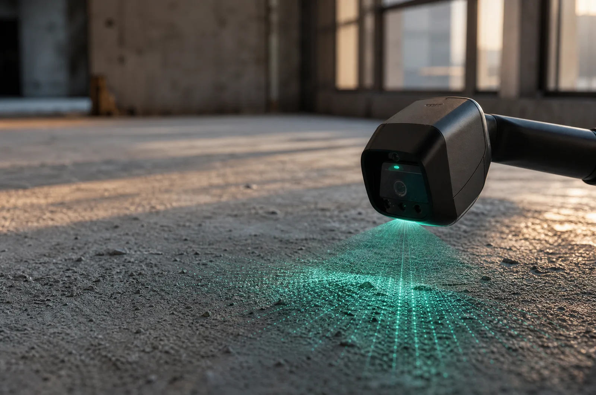
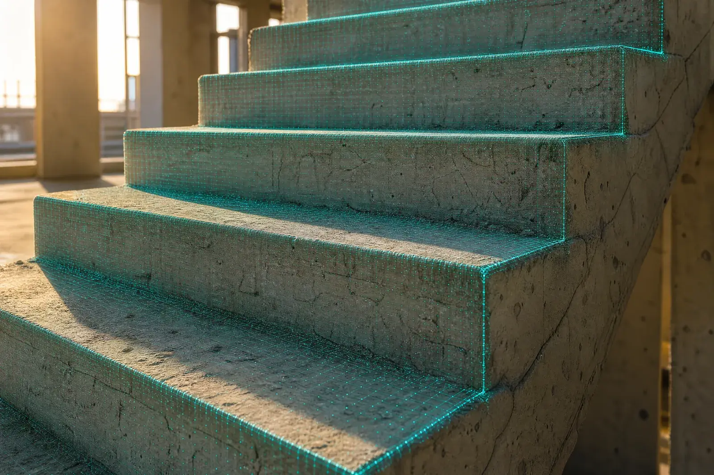
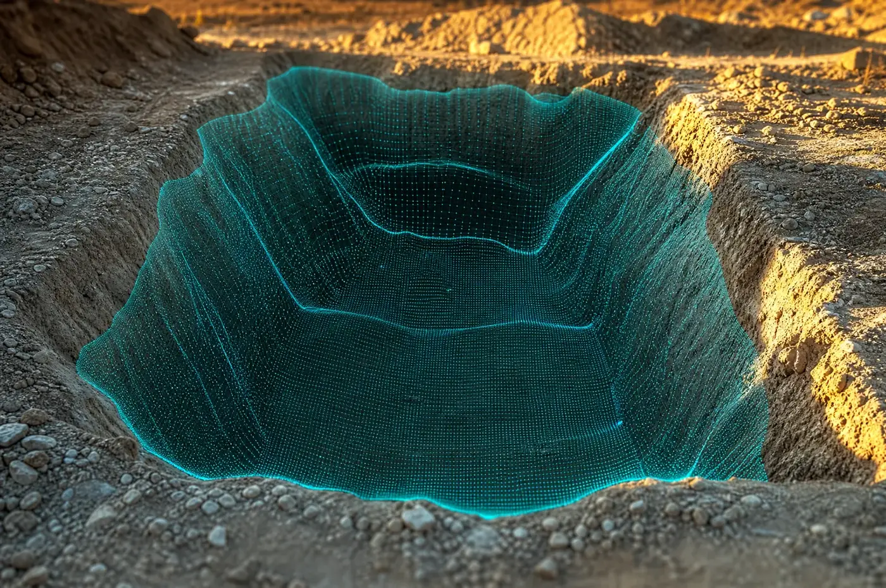
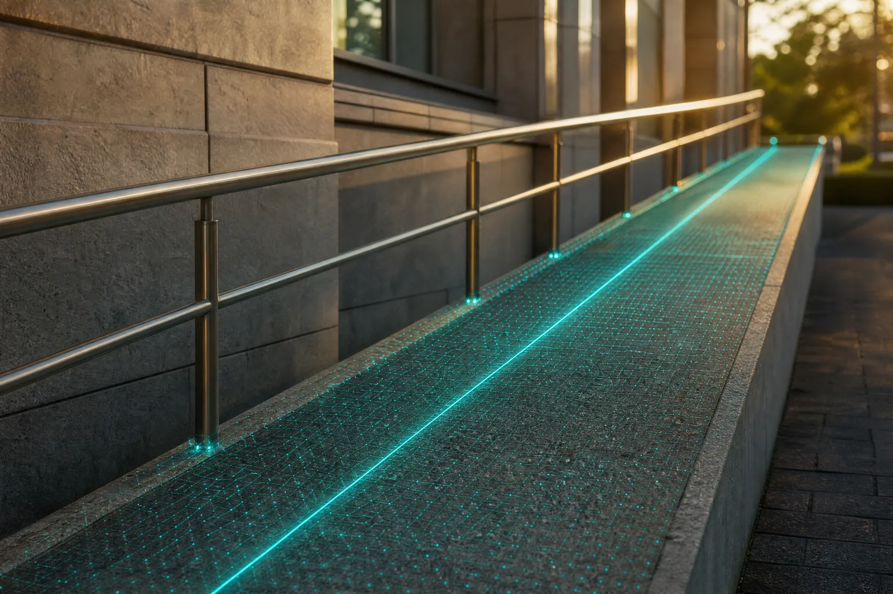
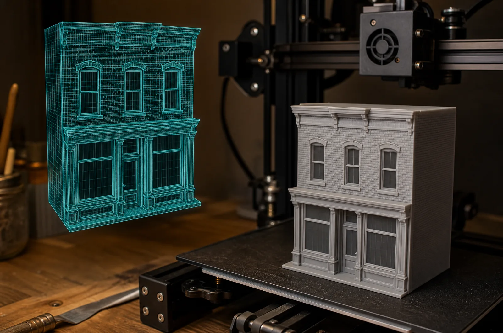

01
מ״מ
עומק Depth
מפת עומק של כל משטח, רצפה, קיר, תקרה, במילימטרים. כל נקודה בסריקה מקבלת מרחק.
מה זה נותן לך: רואים סטיות, שקעים ובליטות לפני שיוצקים, מרצפים או מחפים.

MEASURESOLVE · LiDAR
סורקים פעם אחת. מקבלים עומק, מדרגות, בורות, שיפועים ומודל תלת-ממדי, במספרים, לא בהערכות.

01, 05 · יכולות
כל יכולת היא פיצ׳ר עצמאי שאפשר להזמין לבד. כל אחת מוציאה מספר, לא תיאור.
01
מ״מ
מפת עומק של כל משטח, רצפה, קיר, תקרה, במילימטרים. כל נקודה בסריקה מקבלת מרחק.
מה זה נותן לך: רואים סטיות, שקעים ובליטות לפני שיוצקים, מרצפים או מחפים.

02
ס״מ × ס״מ
גובה ורוחב של כל מדרגה בגרם, אוטומטית, מסריקה אחת. לא מדרגה אחת לדוגמה. כולן.
מה זה נותן לך: בדיקת אחידות ותקן של כל הגרם בדקות, עם טבלה שמצורפת לדוח.

03
מ3
נפח ועומק של בור, חפירה או שקע, משריקה אחת, בלי לרדת פנימה ובלי למתוח חבל.
מה זה נותן לך: כמות מילוי או פינוי במספר, לפני שמזמינים משאית.

04
% · °
שיפוע של רמפה, משטח או ניקוז, באחוזים ובמעלות, לאורך כל המקטע ולא בנקודה אחת.
מה זה נותן לך: התאמה לתקן נגישות וניקוז, עם הוכחה מדודה במקום ויכוח.

05
STL
סריקה תלת-ממדית שהופכת למודל Mesh, וממנו לקובץ להדפסת תלת-ממד ברזולוציה שאתה מגדיר.
מה זה נותן לך: מודל פיזי או דיגיטלי של מה שיש בשטח, לא של מה שבתוכניות.

פרויקטים אמיתיים
לידור דהן, דוקטור להנדסת חשמל ומחשבים, כשש שנים באלגוריתמיקה לרכב אוטונומי.
איך זה עובד
סורק לידאר במקום. כמה דקות למרחב. בלי לפנות את האתר.
מהסריקה יוצאים עומק, מדרגות, נפח, שיפוע ו-Mesh, לפי מה שהזמנת.
מספרים, תמונות מסומנות וקבצים (CSV / STL) שנכנסים ישר לתיק.
כתבו ללידור. תוך שיחה קצרה נגיד מה אפשר למדוד ומה תקבלו.